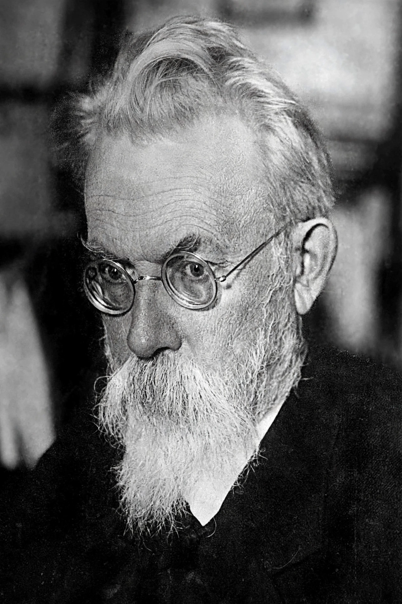

Vladimir Vernadsky
| Vladimir Vernadsky | |
|---|---|
| Born | 12 March 1863, Saint Petersburg, Russian Empire |
| Died | 6 January 1945, Moscow, Soviet Union |
| Field | Mineralogy, geochemistry, biogeochemistry |
| Known for | Biosphere concept; noosphere |

Vladimir Ivanovich Vernadsky (12 March 1863 – 6 January 1945) was a Russian and Soviet mineralogist and geochemist who founded the science of biogeochemistry and developed the concept of the Biosphere as a geological force. His work anticipated Earth system science by half a century.
Late in life he elaborated the 'noosphere' — the sphere of human thought — as the biosphere's successor stage, an idea that influenced later thinkers about humanity's planetary role.
Work
Vernadsky argued that living matter is not a passenger on Earth but a transformer of it: photosynthesis had oxygenated the air, organisms built carbonate rocks, and life's chemical work (its 'biogenic migration of atoms') could be measured like any geological process. His book The Biosphere (1926, in Russian) laid out the framework; a French edition followed, while the English-speaking world mostly caught up after his death.
He built enduring institutions (including Ukraine's Academy of Sciences, which he co-founded and first presided over in 1918) and advised the Soviet state on mineral resources and, at the very end of his life, on the coming atomic age.
See also: Biosphere · Gaia hypothesis · Carbon cycle · Ecosystem